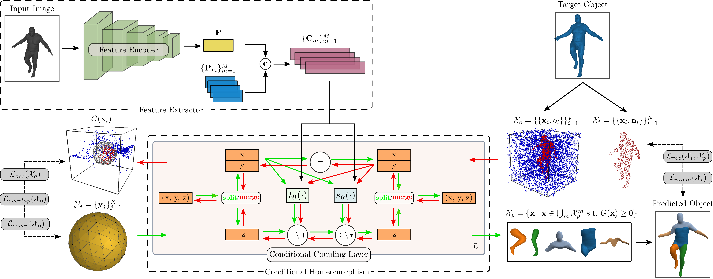

Primitive-based representations seek to infer semantically consistent part arrangements across different object instances. Existing primitive-based methods rely on simple shapes for decomposing complex objects into parts such as cuboids, superquadrics, spheres or convexes. Due to their simple parametrization, these primitives have limited expressivity and cannot capture arbitrarily complex geometries. Therefore, existing part-based methods require a large number of primitives for extracting geometrically accurate reconstructions. However, using more primitives comes at the expense of less interpretable reconstructions. Namely, a primitive is not an identifiable part anymore.
We introduce a novel 3D primitive representation that is defined as a deformation betweek shapes and is parametrized as a learned homeomorphic mapping implemented with an Invertible Neural Network (INN). We argue that a primitive should be a non trivial genus-zero shape with well defined implicit and explicit representations. Using an INN allows us to efficiently compute the implicit and explicit representation of the predicted shape and impose various constraints on the predicted parts. In contrast to prior work, that directly predict the primitive parameters (i.e. centroids and sizes for cuboids and superquadrics and hyperplanes for convexes), we employ the INN to fully define each primitive. This allows us to have primitives that capture arbitrarily complex geometries, hence the ability of our model to parse objects into expressive shape abstractions that are more geometrically accurate using an order of magnitude fewer primitives compared to approaches that rely on simple convex shape primitives.
Given an input image and a watertight mesh of the target object we seek to learn a representation with M primitives that best describes the target object. We define our primitives via a deformation between shapes that is parametrized as a learned homeomorphism implemented with an Invertible Neural Network (INN). For each primitive, we seek to learn a homeomorphism between the 3D space of a simple genus-zero shape and the 3D space of the target object, such that the deformed shape matches a part of the target object. Due to its simple implicit surface definition and tesselation, we employ a sphere as our genus-zero shape. Note that using an INN allows us to efficiently compute the implicit and explicit representation of the predicted shape and impose various constraints on the predicted parts.